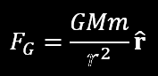

This is a simulation of something like the “Asteroid Belt” in Star Wars, written in a javascript library called p5.
It consists of a random number of bodies under the mutual effect of a random gravity. Mass is proportional to radius, because I can’t think of a good way to make density obvious. The barycentre of the system is always centred on the screen. Each body feels gravity  from every other, unless they're eclipsing. This last condition is to prevent infinite speeds as the distance between a pair approaches zero.
Click on the image to check it out: It looks best in full screen, and click on the system to get a new system.